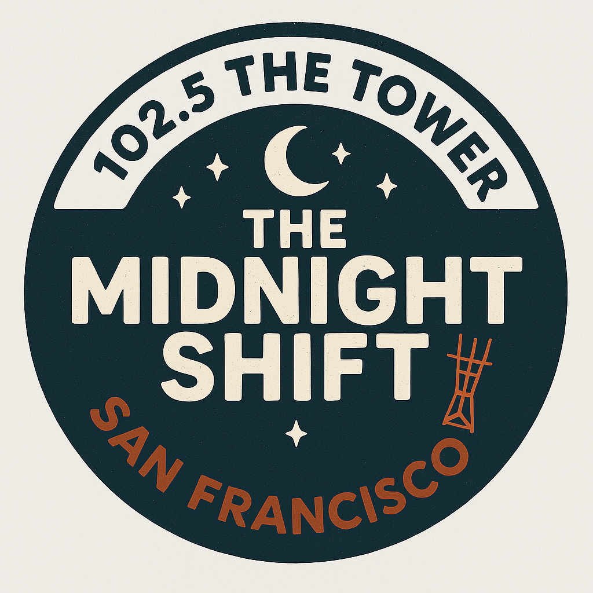

The Midnight Shift - 102.5 The Tower
From the End of the Rainbow - The
Soundtrack
of the City
2009
The First Show
Show #2
Show #3
The Dad Show
Show #05
Show #06
Show #10
Show #11
Show #12
Show #13
Show #14
The Palindrome Show
Show #16
Show #17
Show #18
The XMas Show
2010
The Old-Timey Show
Show #21
The Kind of Blue Show
The Exotica Show
Show #24
The Rock Show
The Theme Show
The Theme Show [2]
Show #27 [3/9/2010]
Show #27 [2]
Show #28 [3/13/2010]
Show #28 [2]
Songs About God
Songs About God [2]
The Birthday Party Show
The Birthday Party Show [2]
The Jazz Show
The Jazz Show [2]
Show #34 [4/11/2010]
Show #34 [2]
2011
Show #48 [3/27/2011]
Show #48 [2]
The Broke-Ass Edition
The Broke-Ass Edition [2]
Show #50 [4/10/2011]
Show #50 [2]
Live Covers
Live Covers [2]
The Mussorgsky Show
The Mussorgsky Show [2]
The Guilty Pleasures Show
The Guilty Pleasures Show [2]
The Twilight Shift
The Twilight Shift [2]